F6 · skutečný Audio Analyzer
Implementace schváleného rozsahu F6, 30. 10. 2026. Skutečný vzhled je předložen k posouzení. Nezměněné rendery skutečných Avalonia kontrol; žádné obrazové makety. Nativní obraz znamená Skia render okna, nikoliv snímek celé pracovní plochy.
2962 PASS, 5 fixture skipů, 10 shodných binárních audio exportů Windows/Linux. Zdrojové audio je read-only. F7 a FLAC/backend F8 nejsou součástí tohoto výsledku.
Windows · záznamy a read-only audioSkia render skutečného nativního okna; vlastní dekódovatelná WAV fixture.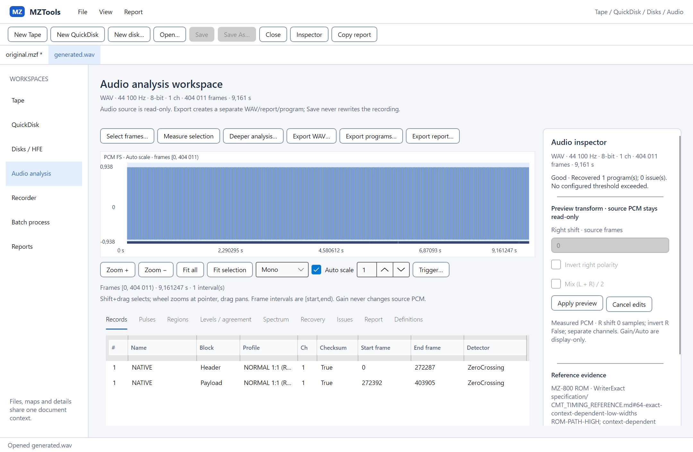
Sdílený histogram v detailuSkutečné Core bins a reference; stejná komponenta jako vložený graf.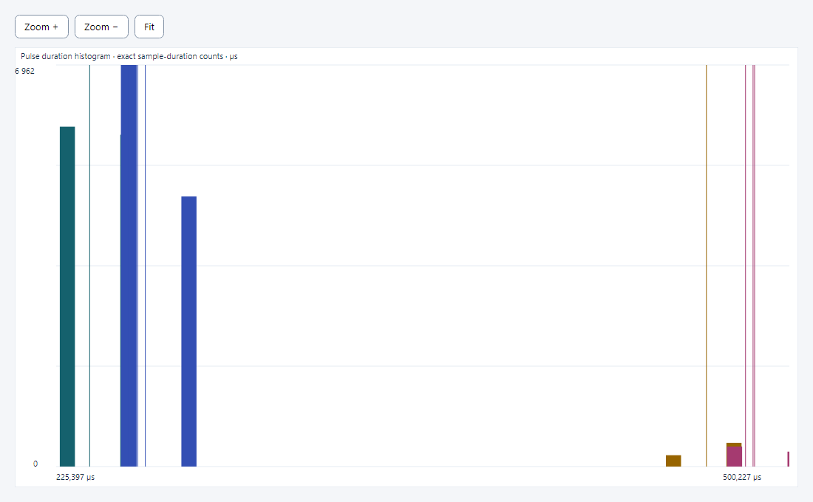
High / Low scatterSkutečné naměřené páry; rozsah grafu lze přiblížit a posouvat.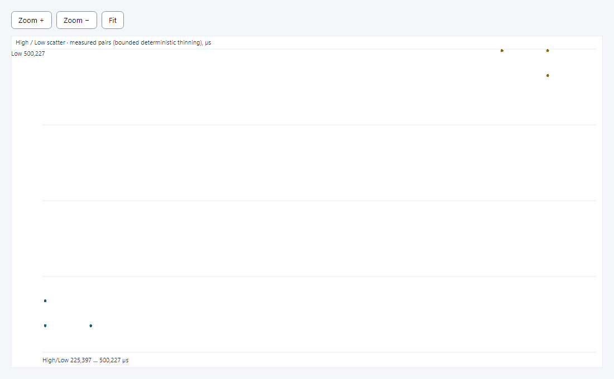
Drift a krátkodobá variabilitaRelativní timing error a lokální stddev; globální rychlost se vykazuje zvlášť.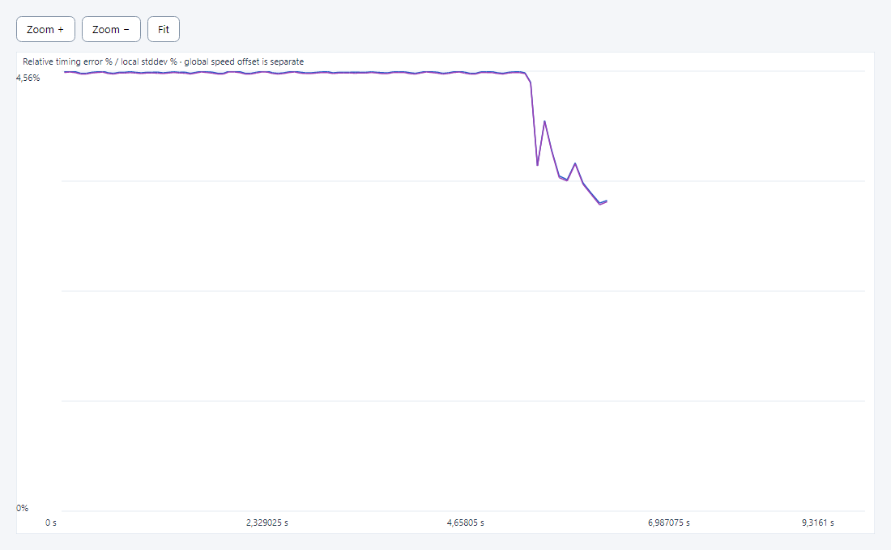
Offline amplitudové FFT spektrumPeriodic Hann, Hz a dBFS; není PSD.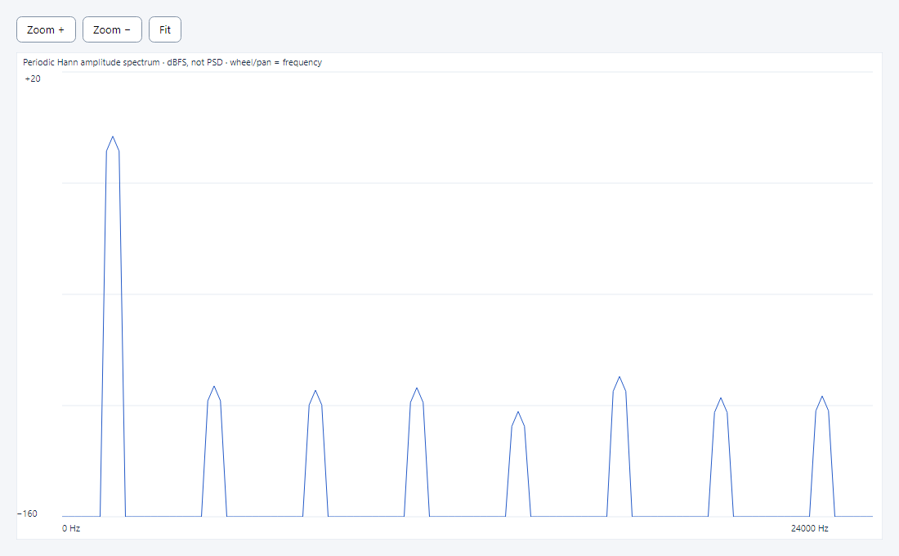
Offline spektrogram skutečného tónuCelý sdílený graf; max agregace přes deklarovaná FFT okna a frekvenční bins.Windows · manual recoverySkutečný Core výsledek a přenositelné workflow.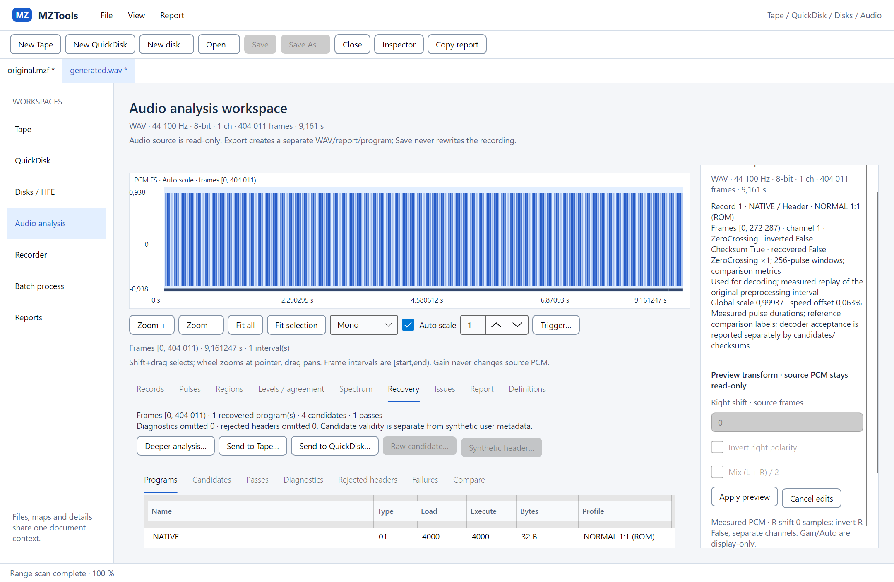
Kandidáti a jejich platnostChecksum a neúplnost zůstávají explicitní; synthetic header je uživatelská metadata.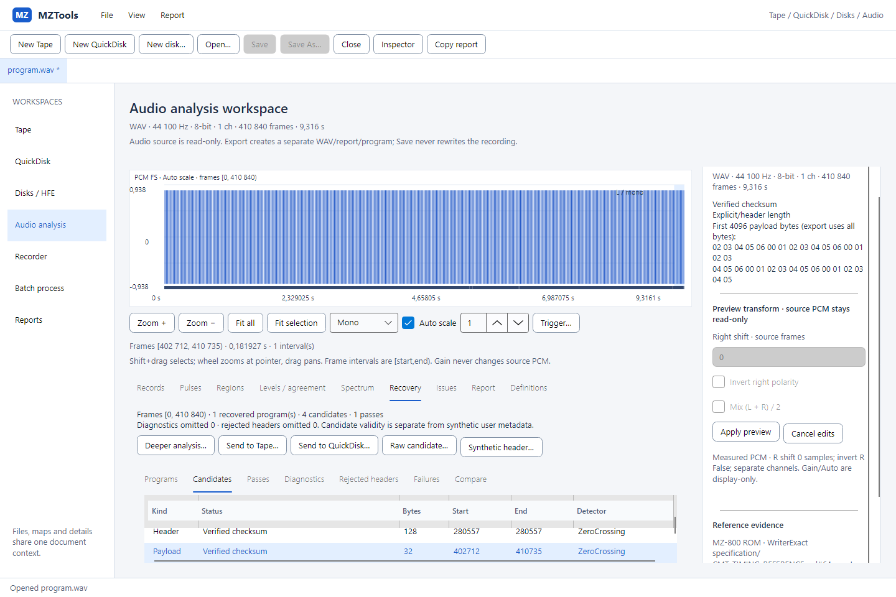
Linux/WSLg · stejný audio workspaceSkia render skutečného X11 okna; WSLg není samostatná běžná desktop instalace.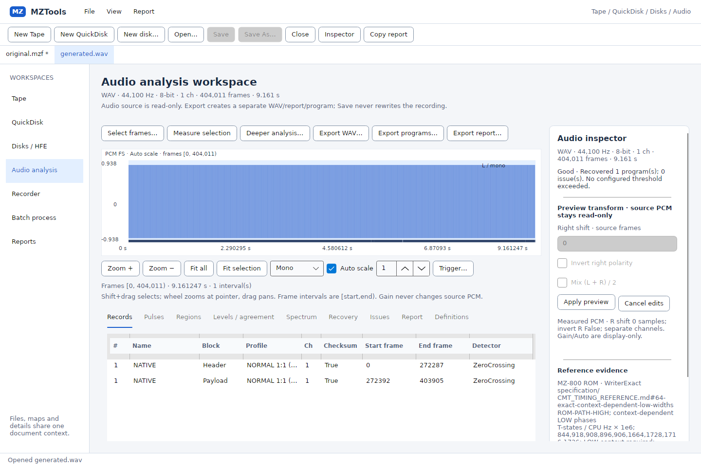
Linux · stejný spektrogramSkutečný headless Skia render; pixelový test ověřuje vykreslení barevných dat.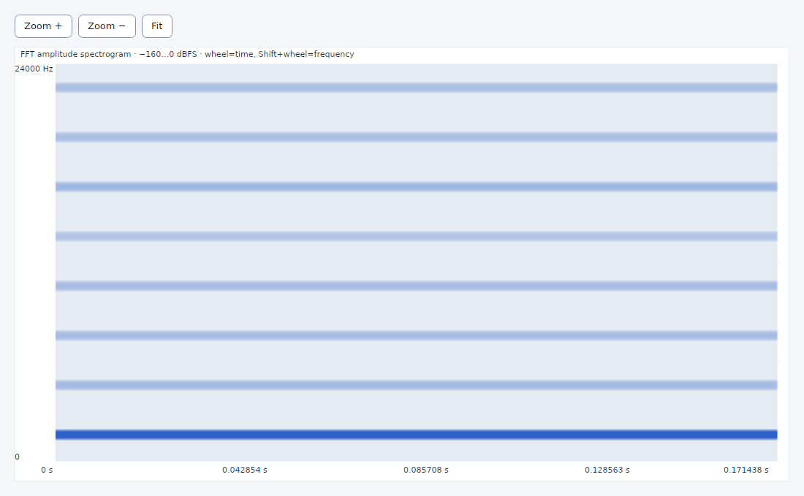
Malý viewport 640 × 480Posuvný obsah a inspector dostupný v samostatném sdíleném detailu.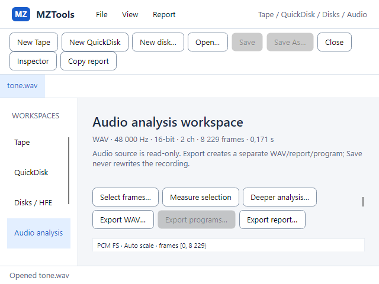
Kompaktní inspectorStejná komponenta pro vložený i plovoucí detail.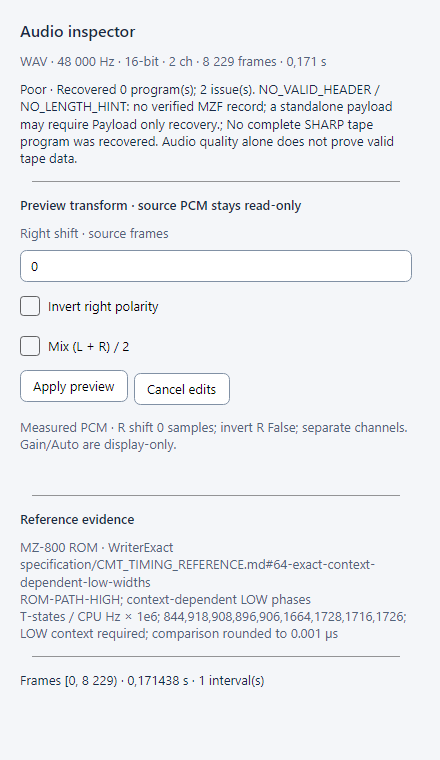
Render scale 150 %Simulovaný headless render scale; nepředstavuje certifikaci všech monitorových DPI.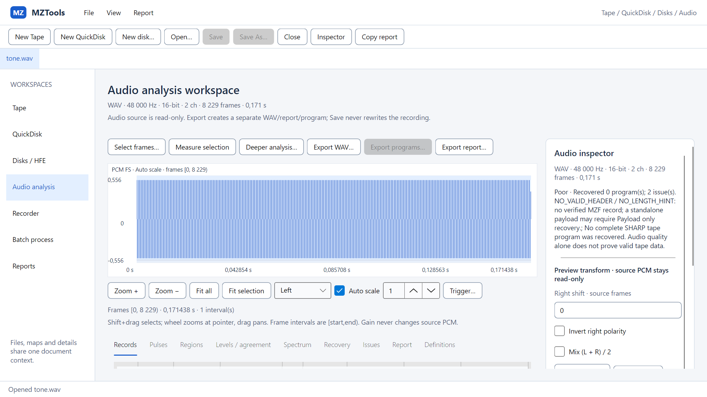
Render scale 200 %Simulovaný headless render scale; data a frame souřadnice se nemění.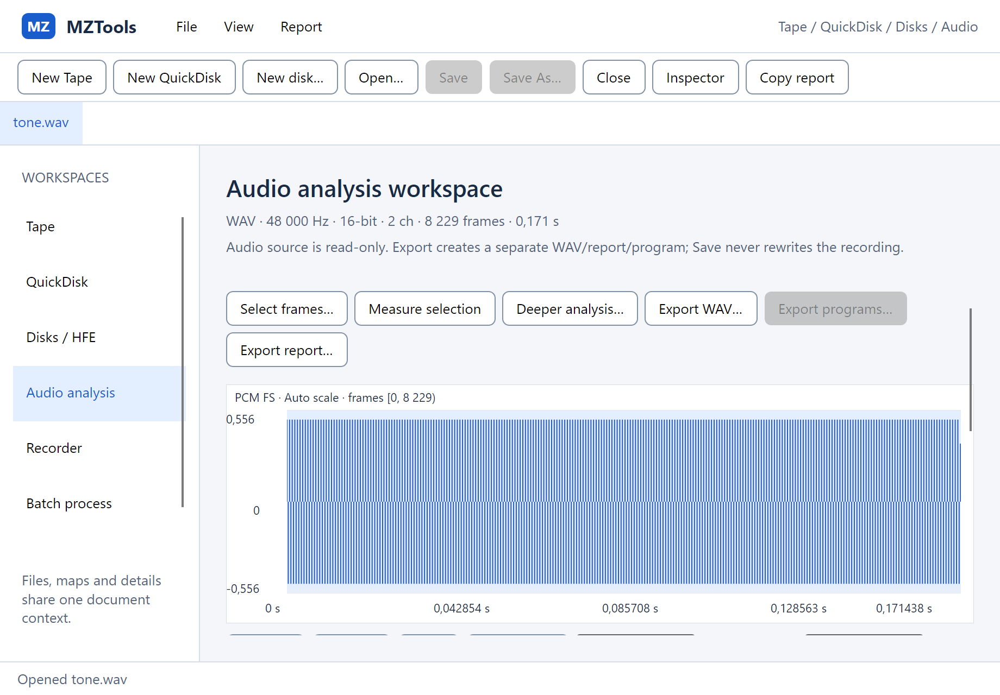